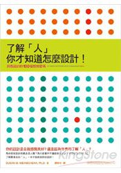
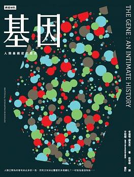

閱物
egg
egg
許瑞宏
- 惡意
- 解憂雜貨店
- 寫作革命：散文、小說、文案、社群貼文輕鬆進階的 40 道練習題
- 穿裙子的男孩
- 惡血
- 基因 (Oct. 4, 2018)
- 因為愛，我們呼吸 (Oct. 18, 2018)
- 了解「人」，你才知道怎麼設計！ (Jan. 10, 2019)
- 深夜小狗神祕習題 (Jan. 31, 2019)
- 小說課 I ─ 折磨讀者的祕密 (Apr. 18, 2019)
- 小說課 II ─ 偷故事的人 (Apr. 18, 2019)
- 小說課 III ─ 偷電影的故事賊 (Apr. 18, 2019)
- 餘震 (Jun. 6, 2019)
- 這就是我來到這世界的理由
- 你的孩子不是你的孩子
目錄(續 1)
- 故事1：3分鐘說18萬個故事，打造影響力
- 故事2：99%有效的故事行銷，創造品牌力 (Sep. 12, 2019)
- 當最後一個音符輕柔落下
- 不當行為 (Nov. 7, 2019)
- 七個會議
- 童話裡隱藏的世界史 (Apr. 16, 2020)
- 新參者
- 親愛的臥底經濟學家
- 禁忌的魔術
- 在天堂遇見的五個人
- 在天堂遇見的下一個人
- CSS 大全 (Jun. 18, 2020)
- 故事行銷
- 牧羊人讀書筆記
- 萬病之王 (Sep. 10, 2020)
目錄(續 2)
目錄(續 3)
保險業的無接觸服務

99% 有效的故事行銷，創造品牌力
許榮哲
99% 有效的故事行銷，創造品牌力
- 飢荒、戰爭下，小麥當主食不夠吃
- 推廣馬鈴薯當主食
- 三好：營養高、產量豐富、容易種植
- 俄國彼得大帝、法國路易十六相繼失敗
- 三壞：鬼影幢幢、染毒陰影、聖經沒說
- 腓特列大帝的馬鈴薯
- 定為「皇家蔬菜」，皇親國戚才能吃
- 國王才能種，老百姓不准種

童話裡隱藏的世界史
朴信英

CSS 大全
Eric A. Meyer & Estelle Weyl
<html>
<head>
<link rel="stylesheet" href="css/reveal.css">
<link rel="stylesheet" href="css/theme/black.css" id="theme">
<style type="text/css">
.parent{
position:absolute;
}
.left{
position: relative;
float: left;
height: 350px;
width: 750px;
}
.right{
position: relative;
float: right;
height: 350px;
width: 180px;
}
</style>
</head>
<body>
<div class="parent">
<div class="left">
左側內容
</div>
<div class="right">
<img class="upx" src="others/egg/2020/css.png" height="220px">
<a href="others/egg/2020/typecss.html" target="_blank">
<i class="far fa-hand-point-up" style="color:#F08080"></i>
</a>
</div>
</div>
</body>
</html>
<html>
<head>
<link rel="stylesheet" href="css/reveal.css">
<link rel="stylesheet" href="css/theme/black.css" id="theme">
<style type="text/css">
.parent{
position:absolute;
}
.left{
position: relative;
float: left;
height: 350px;
width: 750px;
}
.right{
position: relative;
float: right;
height: 350px;
width: 180px;
}
</style>
</head>
<body>
<div class="parent">
<div class="left">
左側內容
</div>
<div class="right">
<img class="upx" src="others/egg/2020/css.png" height="220px">
<a href="others/egg/2020/typecss.html" target="_blank">
<i class="far fa-hand-point-up" style="color:#F08080"></i>
</a>
</div>
</div>
</body>
</html>

不當行為
理查‧塞勒

你的孩子不是你的孩子
吳曉樂
- 把孩子帶來人世間的男女自然能勝任父母的角色 , 這實在是很天真的幻想。
- 每一個小孩，有其存在的獨特性。有太多父母執意要小孩去臨摹其他人的行為，複製類似的成功經驗，去追求他們眼中的理想人生，圓滿他們年輕時未竟的夢，甚至是驅策小孩成為「第二個自己」。
就小孩立場來說，「為了達成某個目的，自己才被生下來」，也是很可悲的一件事。 - 妳若執意給她做決定， 這在某種程度上也是一種溺愛。
- 這些故事之所以存在，是期待我們去凝視一個初衷，靜下來，好好想想，把小孩帶到這世界上的初衷。
曾經，我們光是觸摸小孩柔軟的掌心就滿足不已。

新參者
東野圭吾

七個會議
池井戶潤

3 分鐘說 18 萬個故事，打造影響力
許榮哲
- 「我我我在你老婆床上等等等...... 火車經過。」
- 史上第二厲害的故事類型
- 賽局理論
- 第十三封情書： $r=a(1-\sin\theta)$
- 史上最厲害的故事
- 賽局理論的故事再發展
當最後一個音符輕柔落下
莎莉‧潔諾娃

餘震 (唐山大地震)
張翎 (馮小剛)

小說課 I ─ 折磨讀者的祕密
許榮哲
- 馬奎斯說的極好，每篇好小說都是這個世界上的一個謎。有了謎，就帶來了折磨。
- 此處的場景和一開始的場景幾乎一模一樣，但讀者這時的心情已經和當初看到這個場景時的心情完全不一樣了，...
- 人物的性格決定了人物的命運，而不是小說家決定了人物的命運。
- 有一種說法是這樣，當小說寫到三分之一處時，小說就會脫離作家的手，自己接力寫下去。
- 所以請記得創作 (或虛構) 小說的你，擁有至高無上的訂定規則權力，千萬別被現實這個可怕的敵人牽著鼻子走，


小說課 II ─ 偷故事的人
許榮哲
小說課 III ─ 偷電影的故事賊
許榮哲
隧道
- 隧道非常具有象徵性，入口與出口之間，隔著不知道多久才會結束的黑暗。
- 隧道裡， 一片全然的黑，最無助的人物走在最無助的空間裡，沒有人知道前方等著他們的是什麼。

屍速列車的結局應該停在哪裡？
- 三人新世界 (75%)
- 悲劇英雄 (80%)
- 開放隧道 (85%)
- 貫穿頭尾的伏筆 (原劇)
- 角色性格的伏筆 (性格)
- 重複的禮物 ...
深夜小狗神祕習題
馬克‧海登
- 三門問題 (蒙特霍問題、蒙提霍爾悖論) 假設你正在參加一個遊戲節目，你被要求在三扇門中選擇一扇：其中一扇後面有一輛車；其餘兩扇後面則是山羊。你選擇了一道門，假設是一號門，然後知道門後面有什麼的主持人，開啟了另一扇後面有山羊的門，假設是三號門。他然後問你：「你想選擇二號門嗎？」
- 瑪麗蓮·沃斯·莎凡特 在1980年代中期因躋身《金氏世界紀錄》中的智商紀錄保持人而成名（結果為228）。當時她的答覆在《大觀雜誌》刊出之後引起舉世關注。她的解答徹底違反直覺，並引起眾多數學家的質疑。但隨後的闡釋讓質疑者顏面無光。


了解人你才知道怎麼設計
- 你的腦部不斷在解釋你眼睛看到的所有事物。


基因：人類最親密的歷史
辛達塔‧穆克吉 (The Gene)
- 你的爹娘，把你搞得
一蹋糊塗 。
他們未必有心如此，卻依舊這麼做了。他們把自己的缺點，一股腦兒塞給你，還特別為你，附贈更多。 - 疾病不是絕對的殘疾，而是基因型和環境之間的不一致。
- 女性的隱私權「範圍足以涵蓋她是否決定終止懷孕」。
- 法官認為「在可以合理確定孩子會畸形時，準父母有權選擇不要生孩子。」
- 法庭認為孩子擁有天生不帶有遺傳異常的權利，這是一種基本的權利。
- 人類史上舉世最大的「消極優生學」計畫，並不是 1930 年代在納粹德國或奧地利有系統地處決猶太人，這項恐怖的殊榮落在印度和中國，在這兩個國家，...


因為愛，我們呼吸
莉莎‧潔諾娃 (Inside the O'Briens)
亨丁頓舞蹈症
- 他伸進前口袋，拿出零錢。他找出四個二十五分硬幣...。每個孩子都有百分之五十的機率。
- 至今，有超過百分之九十可能患有 HD 的人選擇保持未知。
- 寶寶一出生，就只有她自己才能決定要不要知道自己基因，而最早的檢驗法定年齡是十八歲。
- 自 1993 年起知道造成 HD 的單一因素是基因突變，但至今仍無有效預防或減緩病程的療法。

- 他伸進前口袋，拿出零錢。他找出四個二十五分硬幣...。每個孩子都有百分之五十的機率。
- 至今，有超過百分之九十可能患有 HD 的人選擇保持未知。
- 寶寶一出生，就只有她自己才能決定要不要知道自己基因，而最早的檢驗法定年齡是十八歲。
- 自 1993 年起知道造成 HD 的單一因素是基因突變，但至今仍無有效預防或減緩病程的療法。
這就是我來到這世界的理由
莉莎‧潔諾娃 (Love Anthony)
自閉症
- 自閉症患者只是和別人不同，而不是不如人。
- 討厭碰觸、不與人有眼神接觸，但還是有想法，同每個人一樣，他有他喜歡的邏輯，與思考模式。
- 高鐵上尖叫
- 永遠如此規則
- 情狀規則
- 我來到這個世界只有一個簡單的目的，而自閉症就是我的工具

- 自閉症患者只是和別人不同，而不是不如人。
- 討厭碰觸、不與人有眼神接觸，但還是有想法，同每個人一樣，他有他喜歡的邏輯，與思考模式。
- 高鐵上尖叫
- 永遠如此規則
- 情狀規則
- 我來到這個世界只有一個簡單的目的，而自閉症就是我的工具